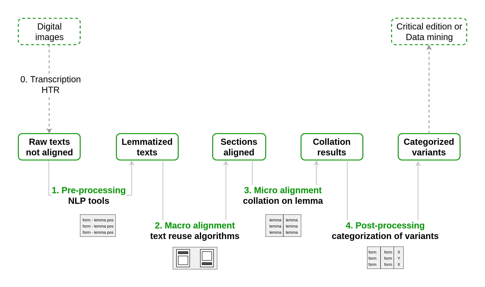

Contare e vedere
la mouvance nel Lancelot
Sapienza Università di Roma, 14 novembre 2023
Per Arianna Punzi
Elena Spadini (Università di Basilea)
Per Arianna Punzi
Elena Spadini (Università di Basilea)
La prédominance, dans le corpus, de l'anonymat constitue un indice, certes en partie accidentel, mais non dépourvu de sens. Le rôle de l'individu dans la genèse de l'œuvre nous apparaît mal, et sans doute, les contemporains lui attribuèrent-ils peu de valeur.
Zumthor 1972, p. 68
L'œuvre est fondamentalement mouvante
Zumthor 1972, p. 73
Composizione ciclo
- un autore (Lot)
- un autore per Lancelot, Queste e Mort Artu (Micha, Combes)
- un architetto (Frappier)
- Lancelot non ciclico (Kennedy)
Gautier Map
Blocchi del Lancelot
- Marche de Gaule
- Galehaut
- Charrette
- Meleagant
- Agravain
Ricezione e circolazione per blocchi.
Composizione?
Composizione?
(Punzi, "Riflessioni sulla prima sezione del Lancelot en prose",
Forme letterarie del Medioevo romanzo, 2016)
Forme letterarie del Medioevo romanzo, 2016)
Stilometria

It is a truth not generally acknowledged that, in most discussions of works of English fiction, we proceed as if a third, two-fifths, a half of our material were not really there
John Burrows. Computation into criticism. A Study of Jane Austen's novels and an experiment in methods. Clarendon Press, 1987.
Unsupervised learning
vs supervisedEsempio: individuare gruppi di testi simili in un corpus di testi anonimi
Metodi: Hierarchical Agglomerative Clustering, Principal Component Analysis, ...
Tristan en prose (ed. Ménard), Lancelot en prose (ed. Micha) > blocchi random di 10'000 parole > lemmatizzazione (
pie-extended) > Stylo in R (Cluster Analysis, Classic Delta, 600 MFW)Workflow
|
Ed. Micha [lunga]
- Recuperare testi da DL di Droz via curl
- Pulire testi (note, numeri, caratteri speciali) via script - Lemmatizzare via pie-extended
- Dividere in blocchi da 10'000 parole via script |
Ed. Poirion-Walter (Pléiade) [breve]
- Da PDF, riconoscimento automatico della scrittura, via software HTR eScriptorium (Kraken) - Estrarre testo in antico francese (samples) via script - Dividere in blocchi da 6'000 parole via script |
Eder, M., Rybicki, J. and Kestemont, M. (2016). "Stylometry with R: a package for computational text analysis". R Journal 8(1): 107-121.
REDAZIONE β (BREVE)
La sua omissione [del gesto di prendere l'amato tra le braccia e baciargli gli occhi e la bocca] [...] mostra da parte del redattore di β una scelta di tenere in ombra il sentimento che ha tutte le caratteristiche della passione d'amore che divora il cuore del gigante o viceversa da parte di α la scelta di amplificare questo aspetto.
Punzi, All'ombra di Lancillotto, p. 73
[...] i temi che ricorrono nella redazione breve, o meglio nei
punti in cui essa diverge dalla lunga, come emerso dal confronto: la religione e la morale, oltre ad un attenzione per le pratiche di governo. [...] Sembra dunque trattarsi[...] di una religiosità ecclesiastica, che menziona a più riprese le istituzioni e i precetti della Chiesa
Spadini, Studi sul Lancelot en prose [tesi dottorato], p. 65
Workflow

Camps, Jean-Baptiste, Lucence Ing, and Elena Spadini. “Collating Medieval Vernacular Texts. Aligning Witnesses, Classifying Variants.” DH2019
Lemmatizzazione:
pie-extended. Collazione: CollateX[β] Et lors ont pris congiet et s’en vont en Sorelois. Et Galahos fist la gregnor aumosne del monde ne que il onques feist jor de sa vie comme de povres revestir et de marier orfenins et de douner a toute mesaisie gent et de rendre toutes tailles
et d’apaier toutes descordes et les guerres a son pooir. Et avoec tout çou fist il estorer .VI. abaies dont les .IIII. sont de le ordene saint Augustin et les autres .II. sont de noirs
moignes.
Cf. I (IX 52, lunga)
[α] li Sains Esperist le demostra a un saint hermite ki faisoit
le servise de matines
[β] il avoit el moustier .I. saint homme de l’ordene saint Augustin et ce fu uns ermites. Et a celuy descouvri li Sains Esperis la desloiauté que cil faisoient en Sainte Eglyse
[α] lieus ou vos veés de la clarté entor si est li cimetieres ou
il gist les cors de maint preudome ki en lor vie furent saint et religios.
[β]
mes li chimetiere n’i perdi riens de la clarté, car il i gisent maint cors saint dont nous creons que les ames soient tout devant Jhesu Crist.
[α] alerent les choses que
le
pape de Rome qui lors tenoit le siege le sot, si le tint a molt grant despit, quant si haus hom com li rois de Bretaigne avoit deguerpie sa feme sans le seu de Sainte Iglise : si a commandé que la venjance Nostre Seignor soit espandue par la terre ou il prist sa premiere feme, tant que il fust racordés par Sainte Iglise. En ceste maniere fu entredite la terre le roi Artu vint et un mois.
[β]
Et tant corut la novele del roi Artu de ce que il avoit sa feme encachie de lui et en avoit une autre
reprise que li apostoiles de Rome
Estevenes qui a cel tans avoit la chité de Rome en sot auques la verité de ce que il s’estoit ensi departis de sa feme sans le commandement de Sainte Eglyse et bien dist que molt chier le comperra, que li autre desloial ne presissent a luy example.
Lors li manda li apostoiles de Rome comme par obedience comme a son fill que il laissast sa feme que il avoit novelement prise et presist l’autre dusques adont que par le signe de Rome fust esprové que il le deust encachier et celi que il tient reprendre, car bien estoit drois et raisons que chou qui estoit assamblés par le conseil et par le wait de Sainte Eglise qu’il en ovrast aussi avant par Sainte Eglise, ne onques por ceste cose que li apostoilles li manda ne vaut li rois sa premiere feme reprendre ne l’autre layer. Et quant li apostoilles sot chou, si le fist escumineer et toute la terre de Bretaigne fu .XXI. mois. Et anchois que il le comenchast, avoit li rois Artus tenu sa feme .X. mois et plus.
Lors li manda li apostoiles de Rome comme par obedience comme a son fill que il laissast sa feme que il avoit novelement prise et presist l’autre dusques adont que par le signe de Rome fust esprové que il le deust encachier et celi que il tient reprendre, car bien estoit drois et raisons que chou qui estoit assamblés par le conseil et par le wait de Sainte Eglise qu’il en ovrast aussi avant par Sainte Eglise, ne onques por ceste cose que li apostoilles li manda ne vaut li rois sa premiere feme reprendre ne l’autre layer. Et quant li apostoilles sot chou, si le fist escumineer et toute la terre de Bretaigne fu .XXI. mois. Et anchois que il le comenchast, avoit li rois Artus tenu sa feme .X. mois et plus.
[α] Et por ce se fist confés tot en oiance de si vil pechié et si orible comme de son seignor, ki ci est, qu’il avoit longuement honi et de sa feme, et issi me commanda il que je le
deisse en ceste cort, kar je estoie en la place ou il se fist confés.
[β]
Et la damoisele dist au roi : « Il fu voirs que quant Lancelos fit retornés de la Dolorouse Tour, si fu navrés d’un glaive
par mi le cors et molt ot grant paor de morir sans confession ; mes toutes voies
fu il confés, la Dieu merci. Et li fu encargiés que il se feist confés devant tout le comun de vostre cort u par sa bouce u par l’autrui. Et il me requist por Dieu que jou li feisse ceste voie